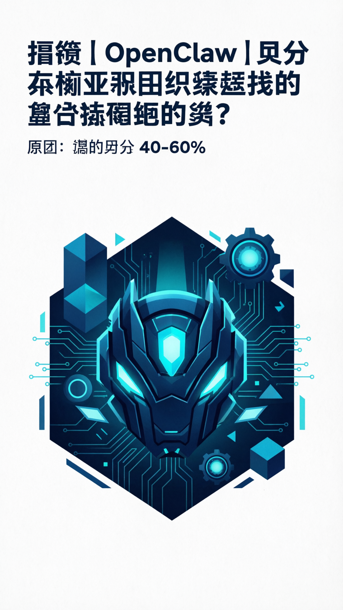

工具推荐
OpenClaw 技能指南深度解读
2026-04-02

13,700+
总收录
87%
通过率
2,868
精选
🤖 什么是 OpenClaw Skills？
OpenClaw Skills 是 OpenClaw 的插件扩展系统。每个 Skill 本质上是一个文件夹，核心文件是 SKILL.md——包含 YAML 元数据和 Markdown 指令。
🎯 必装技能清单
- Web Browsing - 浏览器自动化 (180,000+ 安装)
- Tavily Search - AI 专属搜索 (85,000+ 安装)
- Felo Search - AI 综合答案 (60,000+ 安装)
- Capability Evolver - 自进化引擎 (35,000+ 安装)
- Google Workspace - 全能办公 (14,000+ 安装)
⚠️ 安全避坑
约 12% 的技能存在安全问题，请务必：优先安装官方审核通过的精选技能、仔细审查 SKILL.md 文件内容、关注供应链攻击防护。
#OpenClaw
#AI
#技能
#工具推荐